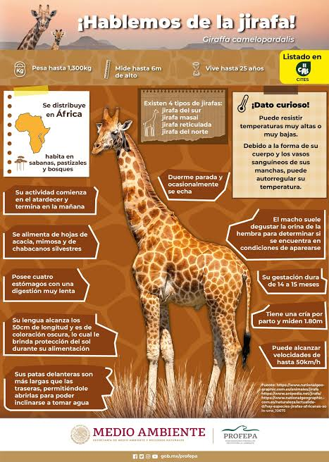

La jirafa (Giraffa camelopardalis) es el animal terrestre más alto del mundo y es nativa de las sabanas,
pastizales y bosques abiertos de África. Su apariencia es única debido a su extraordinario cuello de aproximadamente
2 metros de largo, el cual, curiosamente, contiene el mismo número de vértebras cervicales que el de un ser humano (siete),
solo que mucho más alargadas. Físicamente, los machos pueden alcanzar alturas de entre 5.7 y 6 metros, pesando hasta 1,600 kg,
mientras que las hembras suelen medir entre 4.3 y 4.5 metros con un peso menor. Su cuerpo está cubierto por un pelaje con manchas
marrones o pardas únicas para cada individuo, las cuales funcionan como huellas dactilares y les ayudan a camuflarse entre la vegetación.
En su cabeza poseen dos pequeños cuernos cubiertos de piel llamados osiconos. Sus patas delanteras son notablemente más largas que las traseras,
y sus pies cuentan con grandes pezuñas que les permiten caminar largas distancias.